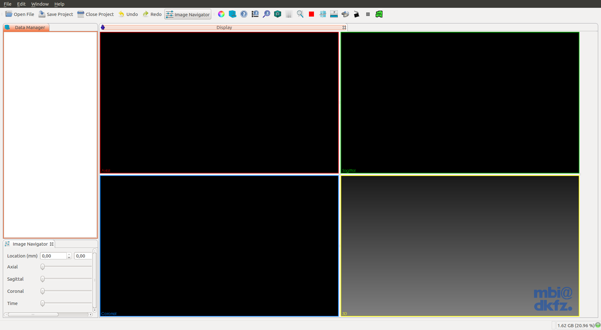

Prerequisites
- Docker
- GIT
- CMake (version 3.2 or higher. Current stable 3.3)
- Qt 5.x
- Make sure that you select a Qt version which provides the right OpenGL-enabled packages for your architecture and compiler
Install dependencies.:
- Install Docker.:
$ sudo apt-get update
$ sudo apt-get install curl
$ curl -sSL https://get.docker.com/ | sh
- Docker - Ubuntu:14.04.:
$ docker pull ubuntu:14.04
$ docker images
$ docker run -i -t <IMAGE_ID> /bin/bash
- Inside Docker.:
root@XXXXX:$ apt-get update && apt-get install -y \
software-properties-common \
&& apt-add-repository multiverse \
&& apt-get update \
&& apt-get install -y \
bison build-essential curl git libarchive-dev libbz2-ocaml-dev libcurl4-openssl-dev \
libexpat-ocaml-dev libfaac-dev libmp3lame-dev libopencore-amrnb-dev libopencore-amrwb-dev \
libqt5svg5-dev libqt5webkit5-dev libqt5xmlpatterns5-dev libtheora-dev libtiff5-dev \
libvorbis-dev libvpx-dev libwrap0-dev libxi-dev libxmu-dev pkg-config qt5-default \
qtscript5-dev qttools5-dev qttools5-dev-tools vim wget yasm
- Docker - Ubuntu:15.04.:
$ docker pull ubuntu:15.04
$ docker images
$ docker run -i -t <IMAGE_ID> /bin/bash
- Inside Docker.:
root@XXXXX:$ apt-get update && apt-get install -y \
software-properties-common \
&& apt-add-repository multiverse \
&& apt-get update \
&& apt-get install -y \
bison build-essential curl git libarchive-dev libbz2-ocaml-dev libcurl4-openssl-dev \
libexpat1-dev libfaac-dev libmp3lame-dev libopencore-amrnb-dev libopencore-amrwb-dev \
libqt5svg5-dev libqt5webkit5-dev libqt5xmlpatterns5-dev libtheora-dev libtiff5-dev \
libvorbis-dev libvpx-dev libwrap0-dev libxi-dev libxmu-dev python-dev pkg-config \
qt5-default qtscript5-dev qttools5-dev qttools5-dev-tools vim wget yasm
- Docker - Ubuntu:14.04 and Ubuntu:15.04.:
# OpenCL for Intel/AMD:
root@XXXXX:$ apt-get install ocl-icd-opencl-dev
# OpenCL for Nvidia:
root@XXXXX:$ apt-get install nvidia-opencl-icd-XXX
# Where XXX is the version. Current 346
Docker - Build Cmake 3.3.0.:
root@XXXXX:$ wget -c http://www.cmake.org/files/v3.3/cmake-3.3.0.tar.gz
root@XXXXX:$ tar xvzf cmake-3.3.0.tar.gz && cd cmake-3.3.0
root@XXXXX:$ ./bootstrap --prefix=/usr --system-libs --mandir=/share/man --no-system-jsoncpp \
--docdir=/share/doc/cmake-3.3.0 --qt-gui
root@XXXXX:$ make && make install
Docker - Build FFmpeg, we need it for OpenCV.:
root@XXXXX:$ git clone https://github.com/FFmpeg/FFmpeg.git
root@XXXXX:$ cd FFmpeg
root@XXXXX:$ ./configure --enable-gpl --enable-libfaac --enable-libmp3lame --enable-libopencore-amrnb \
--enable-libopencore-amrwb --enable-libtheora --enable-libvorbis --enable-libvpx \
--enable-nonfree --enable-version3 --enable-x11grab --enable-shared --enable-pic
root@XXXXX:$ make && make install
Docker - Build MITK.:
root@XXXXX:$ git clone http://git.mitk.org/MITK.git
root@XXXXX:$ mkdir MITK-build && cd MITK-build
root@XXXXX:$ ccmake ../MITK


- Note: in Ubuntu:14.04 you CAN'T select the option 'MITK_USE_Python', because It needs Qt >= 5.3
# Press 'c' to configure and 'g' to generate and exit.
root@XXXXX:$ make
# I do NOT recommend running `make` with the option `-j4`. You'll get dependency related errors during the build.
# This last command will take several hours, so go and take a walk (in another city) :)
root@XXXXX:$ exit
$ docker ps -l
CONTAINER ID IMAGE COMMAND CREATED STATUS PORTS NAMES
b378149da6c6 ubuntu:15.04 "/bin/bash" 8 hours ago Exited (0) 10 seconds ago focused_newton
$ docker commit <CONTAINER_NAME> ubuntu15/mitk:latest
# See the CONTAINER_NAME on the right of `docker ps -l`
Docker - Running MITK.:
- Create a Dockerfile.:
FROM <IMAGE>
MAINTAINER <YOUR_NAME>
ENV MITK_WORKBENCH /path/to/MITK-build/bin/MitkWorkbench
CMD $MITK_WORKBENCH
- Where
<IMAGE>is the name of the image where we have installed MITK. - e.g.: FROM ubuntu15/mitk:latest
$ docker images
REPOSITORY TAG IMAGE ID CREATED VIRTUAL SIZE
ubuntu15/mitk latest 19af721ab6a3 11 hours ago 13.2 GB
- Build a new image with the Dockerfile.:
$ docker build --rm -t mitk:15.04 .
$ docker images
REPOSITORY TAG IMAGE ID CREATED VIRTUAL SIZE
mitk 15.04 bdcce6cafa44 26 minutes ago 13.2 GB
$ docker ps -l
CONTAINER ID IMAGE COMMAND CREATED STATUS PORTS NAMES
2f140ab82356 mitk:15.04 "/bin/bash" 42 minutes ago Exited (0) 41 minutes ago silly_galileo
$ xhost +local:`docker inspect --format='{{ .Config.Hostname }}' <CONTAINER_ID>`
$ docker run -ti --rm -e DISPLAY=$DISPLAY -v /tmp/.X11-unix:/tmp/.X11-unix mitk:15.04
